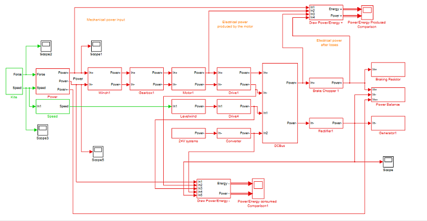

Second simulation of the power flow
After the first simulation, I built a second one to provide more detail on how power flows and how the efficiency of each element affects the overall efficiency of the ground station.
This time the input data came from three MATLAB files. The first two were simple MATLAB data files generated from measurements stored by the ground station and needed to be transformed into the right format: one contained the wind force on the kite transmitted to the winch, and the other the speed. The third file contained the variables used for the efficiencies of the ground-station elements and could be edited easily when components changed.
This improved on the previous simulation because it used real data stored by the CompactRIO system to model the power flows on the machine and then compare the results. It also helped identify where losses were greatest; detecting these bottlenecks makes it easier to improve the overall efficiency of the system.
